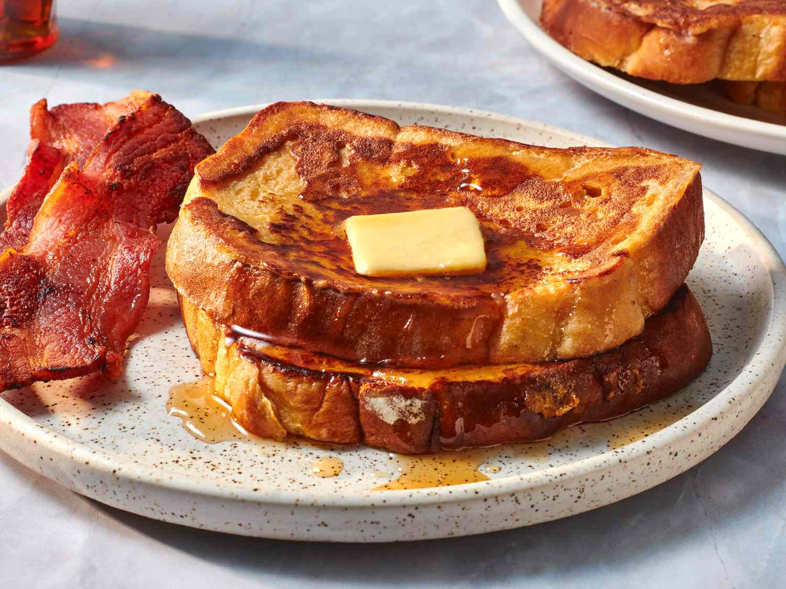

| FRENCH TOAST |
Preperation Time: 10 minutes | Cooking Time: 20 Minutes | Total Time: 30 minutes

Ingredients
- 1/4 cup all-purpose flour
- 1 cup milk
- 3 eggs
- 1 tbsp. white sugar
- 1 tsp. vanilla extract
- 1/2 tsp cinnamon
- 1 pinch salt
- 12 slices white bread
Directions
- Add flour to a mixing bowl. Slowly whisk in milk, then eggs,
sugar, vanilla extract, cinnamon, and salt till smooth.
- Heat a frying pan on medium heat with a little oil.
- Soak bread slices in milk mixture.
- Fry bread on both sides (3-4 minutes each) till golden brown.
- Serve hot, with maple syrup, butter or condiments of your choice. Enjoy!
Home